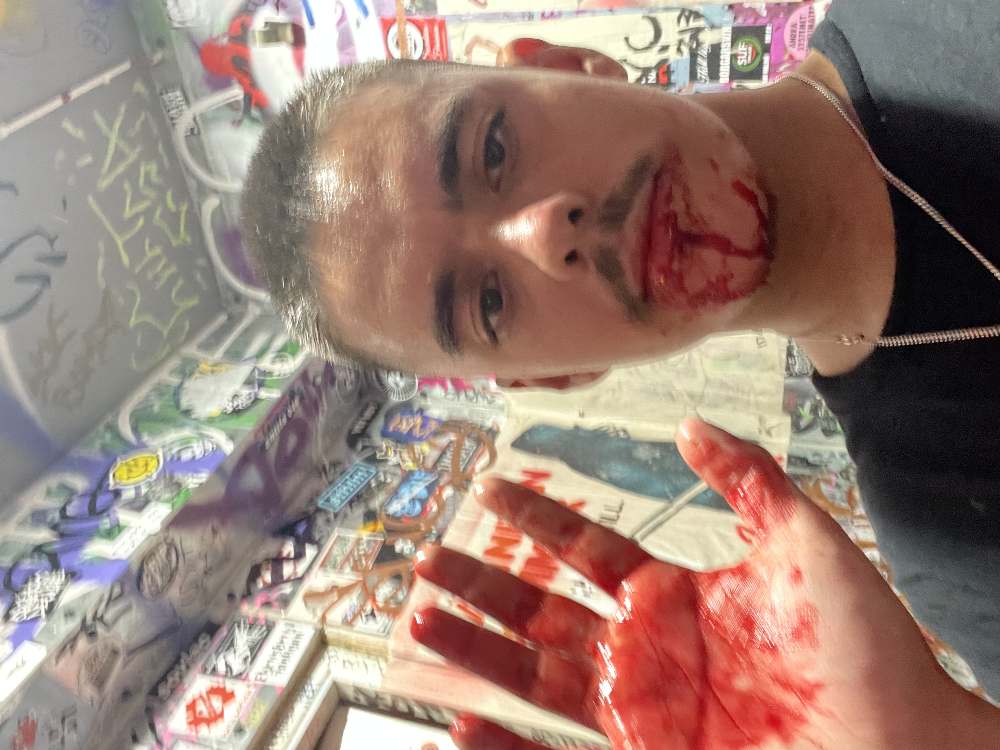
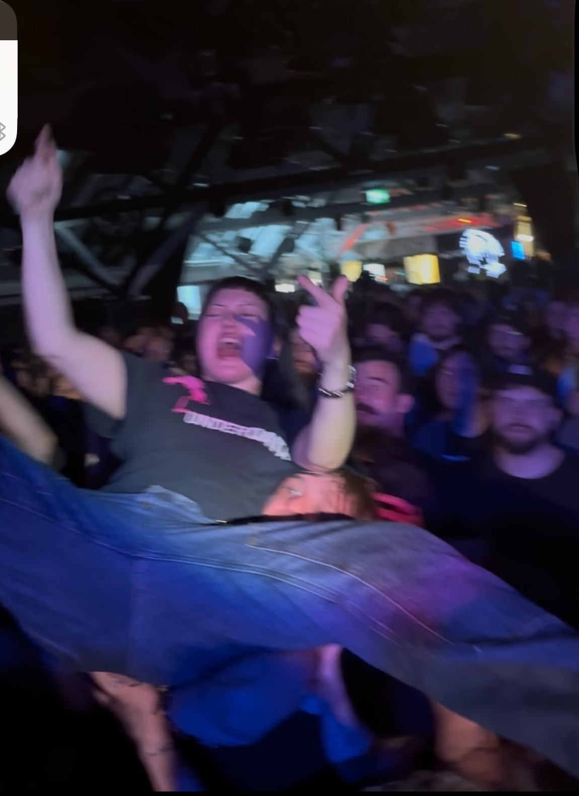

Q: Tell me about the video.
John: I was moshing and stage-diving to a band called Speedway at the Alive & Well festival 2025, one of the most anticipated bands by many who attended the festival.
Q: What does hardcore mean to you?
John: It means a lot to me. Hardcore is not just a genre, its family, community and a lifestyle.

Q: What happened to your face?
Isak: I got spin-kicked in the face, haha.
It was my first time at a hardcore show actually.
Shout out to Jesus Piece.
Q: Did it hurt? What made you want to keep attending hardcore shows after that?
Isak: It didn't hurt that much, it must've been the adrenaline. I have scar on the inside of my cheek now.
I've always enjoyed going to shows, I've been in hiphop/rap moshpits before but nothing tops the adrenaline you get from getting your ass beat at a hardcore show. I just love the music, energy and community.

Q: What band did you crowd surf to?
Adele: It was a band called Basement! and the opener was a shoegaze band called Glare, they are great.
Q: What made it so special?
Adele: While I was crowdsurfing I was screaming the lyrics to "For you the moon" as Andrew (the singer) pointed and smiled at me. Knowing almost every lyric by heart and then screaming them at the top of your lungs, only to catch the attention of one of your favorite bands, is a crazy feeling. The energy was amazing.